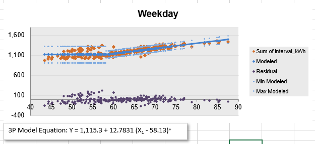

NMEC gaining ground in the California energy efficiency market
NMEC – normalized metered energy consumption – has seen renewed attention in the California energy efficiency market, with the establishment of a CPUC NMEC working group to create guidelines, release of the NMEC Rulebook 2.0, increasing use of NMEC in PPP-funded efficiency programs, and a lively discussion surrounding systemic change events like the COVID-19 pandemic (e.g., check out EVO’s recent white paper). NMEC is a data-driven process for estimating savings via meter data and other measured inputs, without the need for detailed building energy models, and it can be applied to retrofit projects that have a noticeable impact on whole-building usage. For a basic introduction to methods and tools, a good resource is the NMEC Calculator Demonstrations webinar series from PG&E’s learning center.
Programs have always had the option to use site-level NMEC, similar to IPMVP Option C, which has been used internationally. But the NMEC approach really shines with scaled-up programs that apply an efficiency measure to a large portfolio of similar buildings, gaining an economy of scale. This is increasingly practical to manage with good availability of AMI data and cloud computing. Applying measures at the portfolio level allows the program to better target funds by screening out buildings where expected savings uncertainty are high, and possibly to improve reliability of savings estimates through comparison groups (useful for handling systemic changes and other unexpected changes in operations that were not measured and incorporated into the models).
There are some cloud-based platforms for building portfolio management that include an Option C or NMEC savings calculations. Not all of them offer out-of-the-box features that are desirable for a CPUC-ready project, such as calculation transparency, creating both a post-retrofit model in addition to the baseline model, and estimating savings against a normal meteorological year rather than actual conditions in the post-retrofit a.k.a. performance period.
Note that unlike building energy modeling software packages used for code compliance, there is no fixed list of approved tools in CPUC’s NMEC Rulebook. As an alternative to proprietary or cloud-based platforms, there are some great open-source NMEC tools for desktop analysis that can be used. An analyst can use these tools to visualize usage trends, flag non-routine events, and quickly determine if there is a model that fits the baseline data well enough to expect low savings uncertainty before making the decision to proceed with the NMEC approach. And with a little time and effort, the code base can be modified to meet needs that arise from novel projects, without completely reinventing the wheel. The open-source model for collaboration also fosters a community of users who can find and fix bugs or contribute new features.
Let’s take a look at what some of these tools have to offer. What kind of model and what features you want can depend on the project. The models we discuss below were developed for commercial and residential buildings with stable operations, using weather or occupancy as key independent variables. Most of these off-the-shelf tools are not intended to model industrial processes that depend on additional independent variables – projects that require dedicated effort, for which an experienced data scientist can build a custom regression and uncertainty model from scratch. The regression models in these tools tend to resemble the simple, piecewise linear models featured in ASHRAE Guideline 14, as the conventional wisdom is that simple models avoid over-fitting, and the goodness of fit metrics are commonly understood. But there are some other models available, too. All of the tools offer means to visualize usage trends, residuals and goodness of fit, and autocorrelation, so we will focus on the models and savings calculations.
RM&V2.0
To jumpstart interest in and development of open-source NMEC tools, LBNL put together this package. Its underlying code is written in R language and is meant to be used as an add-in with the RStudio IDE, which launches an app on the user’s PC, and the user interacts with the app in a browser. Rather than leaving it to the user to develop a script or decide how to run a model, the app walks the user through the process of loading data and creating a model, without needing to interact directly with the R code. The user can choose between two models: the common time-of-week and temperature (TOWT) model, and the Gradient Boosting Machine (GBM) model, a machine learning algorithm. Each model offers only a few user choices, called hyperparameters.
Time-of-week and temperature model
The TOWT model is a linear regression model, which predicts hourly energy usage as a function of time-of-week and temperature. The time-of-week component generates a range of categorical variables, e.g. one for each hour of a typical weekly schedule, for a total of 24 × 7 = 168 coefficients. The temperature component is a breakpoint model with 4 fixed breakpoints at (40, 55, 65, and 80 °F). In any given hour, the model looks like the breakpoint model, with the intercept set by the coefficient for that time of week. In this implementation, no additional measured input variables are allowed (e.g. holidays, occupancy rates).
RMV2.0 adds some unique features to the TOWT model:
Weighted seasonal models. The length of the “season” is set manually by a hyperparameter, e.g. timescaledays = 90 gives 6 model blocks for the baseline model. Each model block gives additional importance to a chunk of the baseline year via weighted least squares regression (instead of ordinary least squares). When the baseline model is applied to a new date, it gives a weighted average result from all seasonal model blocks, giving greatest importance to the seasons with the closest date. Users typically want to be cautious with or modify this feature when adapting the code, because when the baseline model is applied to dates in the performance period, the seasonal model at the end of the baseline period can dominate. It is also easy for the user to set the time scale too short and accidentally overfit the data.
Automatic occupancy schedule detection for time-of-week. LBNL’s authors explain: “Define ‘occupied’ and ‘unoccupied’ based on a regression of load on outdoor temperature: times of week that the regression usually underpredicts the load will be called occupied, the rest are unoccupied. This is not foolproof but usually works well. … If the regression underpredicts the load more than 65% of the time then assume it’s an occupied period.” See Figure 1 for example. Note that both the simple regression used just for this step, as well as the 65% detection threshold, are not meant to be adjusted by the user, so users may want to inspect the results for quality.
User can select temperature units (°C or °F), though the implementation has a bug (does not convert temperature units of breakpoints).
See our online supplement 1 for a demonstration of retrieving the TOWT model coefficients, segmentation, and weights. See our online supplement 2 for an interactive illustration of the automatic occupancy schedule detection algorithm.
Figure 1. Automatic occupancy detection being applied to hour #70. One data point is pulled from each week of the year. Out of the 52 residuals, based on a simple regression fit, more than 65% are underpredicted. So, this hour is labeled as occupied.
Workflow
The tool guides the user through key steps in the process for applying NMEC to a portfolio of buildings, by reading in a data file for each one. There are two workflows: one for screening analysis (prior to start of the project), and one for savings analysis after the retrofit. In the screening analysis, first, there are views for exploratory data analysis and observing trends and missing data points. Then, the user creates the building level models. After generating the models, the user is guided to a view that displays goodness of fit metrics. The user can set eligibility thresholds, and the tool will display which of the data files meets the criteria. Normally, in a screening analysis, the next step would be to estimate the fractional savings uncertainty, given an estimated fractional savings for the project. LBNL implemented this feature following the simplified formula given by ASHRAE Guideline 14. However, the LBNL team found that the uncertainty model can calculate uncertainty that is lower than it should be, and it has disabled the calculation in the tool.
As an aside, the LBNL team proposed a method to quantify how often the actual usage falls within the model uncertainty bounds of a baseline model.1 Given a dataset of 69 commercial buildings and running four popular model algorithms and two popular uncertainty models, they found that actual usage was within the uncertainty interval (95% confidence) in only 40-70% of the buildings. Technical committees at ASHRAE and EVO are working to keep uncertainty models updated, as this remains an area of research and discussion.
The second workflow for savings analysis picks up at this point and reads in data files for actual weather and performance in the post-retrofit period. It applies baseline models to the post-retrofit conditions, and computes hourly savings trend against the actual usage. Then, it applies an automatic non-routine event detection algorithm, which looks at the time series of hourly energy savings. The algorithm looks for changes over time in statistical characteristics (mean and variance) of the savings trend, and flags timestamps that may indicate a change in the underlying operations of the building during the post-retrofit period. The tool then displays these changepoints on the time-series plot (not to be confused with breakpoints in the temperature regression, although sometimes the terms are used interchangeably). During the performance period, someone should monitor the savings and when a changepoint is flagged, quickly follow up with the facility to identify any non-routine event (NRE) that may explain the change. The tool does not provide a means to make adjustments in the course of the savings calculation.
Finally, the tool provides a “save project” feature to output some information about the models into a project file. The project file can be re-loaded to replay the plots, goodness of fit, and project summary screens. However, the implementation of the project save feature is not finely tuned for sharing projects, and results in larger-than-necessary save files. Our fork of the RMV2.0 tool adjusts the project save features so that you can also view additional details, such as the coefficients of the regression model, and also exposes uncertainty calculations (use at your own risk).
Gradient boosting machine model
In contrast to the linear regression model, the GBM model uses an approach from data science called gradient boosted trees, a variant of decision trees. The implementation in RMV2.0 utilizes another open-source package, XGBoost. The process to create the model involves two steps: k-folds cross validation for parameter tuning, followed by training the model. The result is an ensemble of regression trees, with automatically generated branching rules like “is the temperature > 65 °F?” and “is the hour of the day > 8?” When applying the model, the code plugs the independent variables in to each decision tree to generate a numerical prediction. The ensemble of trees together delivers a prediction that is optimized for goodness of fit and low complexity.
When the code runs, the first step is k-folds cross validation, essentially a test run to determine optimal hyperparameters: how many trees, the depth of each tree, etc. This is more computationally intensive than linear regression. For a single building with hourly data and the default parameter grid search, a business laptop may take about 2 minutes to run the cross validation step. Then, in the model training step, the machine learning algorithm optimizes a loss function and finds the best branching rules and weights.
Compared to linear regressions that can be printed on one page as a set of coefficients, the ensemble decision tree model is described by many more bits of information, so it is typically stored in binary form and never printed out. An example file from RMV produces 400 trees and 23186 nodes total! For the curious, you can use the stored model to plot statistical measures of importance of the independent variables, or draw one of the decision trees. See online supplement 3 for some examples.
Which model would you chose? The TOWT model and related variants are often reasonable modeling choices for, say, an office building with consistent operations and significant fraction of load attributable to HVAC. For buildings with significant variations in schedule or occupancy, it would be wise to consider extending the model to include an additional independent variable, which means going beyond what’s available from the RMV2.0 implementation. The GBM model implementation in RMV2.0 does allow for an additional independent variable such as occupancy. But the relative simplicity and popularity of the TOWT model makes it often preferred for NMEC practitioners.
Nmecr
kW Engineering developed open-source modular R-functions for cleaning and organizing the data, creating various regression models, and generating the model statistics including the savings uncertainty calculations. This package of R-function is named “nmecr”. User can create a master script in R-code by selecting the appropriate function from nmecr to perform each step in an NMEC analysis workflow.
The following regression models are available within nmecr.
Time of Week Temperature (TOWT) model based on LBNL’s code – users can modify the number of temperature segments, values of temperature knots, initial break points, and occupancy threshold hold used to create the piece-wise linear regression model with-in the TOWT model. The model can be applied to demand (uses a timescale parameter and weighting like RMV2.0) and energy (skips the timescale segmentation and weighting)
Note that if meter data are not at a sampling interval of 1 hour, but are daily intervals, then the time-of-week category variables is reduced to just the 7 days of the week.
Simple Linear Regression (SLR) Model – As the name says it is a simple linear model mathematically represented as kWh = intercept + slope × temperature.
3-point cooling – Used when energy usage is primarily a function of cooling load. The breakpoint is automatically determined by the model by analyzing the energy usage pattern. Mathematically represented as kWh = intercept + slope × (temperature − breakpoint).
3-point heating – Used when energy usage is primarily function of heating load. Similar equation as 3-point cooling.
4-point change model – Energy usage pattern changing before and after a breakpoint that is automatically determined by analyzing the energy usage pattern.
kWh = intercept + slope1 × temperature + slope2 × max(0, (temperature−breakpoint))
5-point change model – Similar to 4-Point but with two breakpoints and one additional slope. Breakpoint should be specified by the user. Default breakpoints of nmecr are 50 and 65 oF.
Heating Degree Day (HDD) and Cooling Degree Day (CDD) models – Applicable for daily and monthly intervals only. HDD and CDD can be input by the user or computed from hourly weather data. These are linear models for load as a function of CDD, HDD, or both.
Additional features in nmecr
Users can load temperature and energy data from two separate files, and the package has a utility to join the two sources into a single time series with a consistent time interval, aggregating if necessary.
Using ASHRAE Guideline 14-2014 and including a correlation polynomial from an ASHRAE transaction, nmecr has a R-function to calculating the savings uncertainty percentage.
In addition to model metrics, nmecr has functions to check the normality of residuals, homogeneity of variance of residuals, and correlation and linearity of residuals. These are important quality checks that can warn the user if a building load cannot be adequately described by the independent variables in the model.
The minimum user inputs are kWh and temperature data. The data could be in 15-minute, hourly, daily, or monthly intervals. The data wrangling function can be used to align the time intervals of both the user inputs. For time of week and 5-point change model the user could input additional details like break points, occupancy threshold, etc. but could also leave to the functions to choose the defaults.
Weather coverage factor check – nmecr offers a function to calculate coverage factor when applying a model to a new set of weather conditions. This is an important quality check to make sure the model is not extrapolating too far beyond the training dataset.
The process for setting up a model uses helper functions to load user inputs into named list data structures set up by the authors. The result is well-organized code and data storage. This also allows for the user to override some data attributes in between calls to helper functions, for greater flexibility.
EEMeter
In contrast to RMV2.0 and nmecr, this package is coded in Python. Like nmecr, the user loads the tool as a package of functions, and follows an example script to invoke those functions or make modifications as needed. Working with Python code has a slightly different feel because it is more commonly written using object-oriented syntax, rather than generic functions. Moreover, there is a large user base for Python, and very widely-used options for building a front end or web app to launch the code. (As it happens, RMV2.0 grew out of an earlier Python package that merely called R for statistical functions.)
Note that EEMeter is not just a tool on its own. It is actually the open-source implementation of the CalTRACK methods. The CalTRACK methods are like a protocol that guides pass/fail decisions on data quality, helps select the type of model that should be applied, and governs the calculations such as model fitting, goodness of fit metrics, savings calculation and uncertainty. And CalTRACK methods are developed as an open-source product with an open process, led by Recurve, but open to industry stakeholders. The goal of utilizing this process is to agree on acceptable methods.
The following models are available through EEMeter:
Time-of-week and temperature. This model is applied if the meter data is in hourly intervals, which is preferred.
Similar to RMV2.0, EEMeter performs segmentation of the baseline year into a number of seasonal segments. Rather than having the user selected the duration, EEMeter creates a regression for each calendar month. For each given month, the regression looks at the closest neighboring months and gives those data points a weight of 0.5, compared to 1.0 for the current month.
The automatic detection of occupancy schedules algorithm is used, same as above.
The temperature breakpoints are more strictly controlled in EEMeter. The model starts off with 6 temperature breakpoints (fixed at 30, 45, 55, 65, 75, and 90 °F). Based on a sufficiency requirement for the number of data points that fall into each segment, the code will turn off breakpoints that create bins with too few data points.
If the meter data is in daily or monthly intervals, the tool can fall back on a heating/cooling model where usage = intercept + slope1 × HDD + slope2 × CDD. In the regression, the tool fits both the balance points (the references for HDD and CDD) as well as the coefficients.
Although CalTRACK methods prefer to report avoided energy use (comparing against actual usage in the post-retrofit period), the user can easily create a model for the performance period, generate predictions for a normalizing year, and calculate energy savings that way.
EEMeter stands out for its object-oriented design, which encapsulates the inputs at each step of the modeling process into the return value from its helper functions, making the underlying process more transparent to the user and easy to adapt.
ECAM
ECAM is coded in VBA and used as an add-in within MS Excel. Anyone new to NMEC would find the tool a great training tool, as it does a great job displaying models with explicit formulas, showing all steps in the statistical calculations, and storing results together with the original data. Furthermore, ECAM merely manipulates the workbook file. All the project data persists in the workbook and remains visible to explore even where ECAM is not installed. It can generate models and savings calculations with hourly, daily, or monthly data.
As of writing, ECAM accepts one independent variable (outdoor temperature). However, it segments the data based on the user’s choice of categorical variables to group data points, and the user can apply a different model in each segment, independent from other segments. It also has utilities for generating new fields in the time series data for these category variables. In addition to generating fields based on the timestamp like month, day-of-week, hour-of-day, and other attributes of time and date, it has user dialogs for preparing lists of holiday dates, and setting occupancy schedules, which are mapped into new fields that can be used for grouping and segmentation. Users can also add custom variables such as occupancy.
ECAM encourages the user to visualize usage trends before starting the model creation. Compared to the built-in plotting features of Excel, ECAM offers very sophisticated plotting. When used to generate models, it summarizes the model formula and coefficients clearly next to a plot of raw data, residuals, and uncertainty bounds. It tabulates the residuals on the worksheet, then summarizes model goodness of fit with formulas linked to those cells, so that the viewer can easily trace the calculations. This makes it a great tool for learning the ropes of NMEC calculations.
For each data segment, the user can select from among these models for load as a function of temperature:
Mean
Linear, 2-parameter model (slope and intercept)
3-parameter model for heating only, with or without a constraint that load goes to zero above the breakpoint
3-parameter model for cooling only
4-parameter model for heating and cooling, with just one breakpoint (no deadband)
5-parameter model for heating and cooling (two breakpoints), with a flat line in the deadband
5-parameter model for heating only, with or without a constraint that load goes to zero above the last breakpoint
5-parameter model for cooling only
6-parameter model for heating and cooling, with no constraints
In every case, the fitting function is continuous (no jump between piecewise linear parts). Breakpoints are always treated as free variables during regression and are selected to give the best fit to the data.

Figure 2. A 3-point regression model (intercept, breakpoint, and cooling mode slope). ECAM calculates uncertainty bounds for each part of the piecewise linear fit. Also note that the user may pick a different model for each segment of data, grouped by category variables. E.g. in this same model, weekend and holiday segments may use a 2-point model.
Other features in ECAM:
Resampling utility for regularizing and joining multiple time series.
Weather file lookup dialog.
Easy to manually override categorical variables and flag non-routine readings, because data is always kept in a spreadsheet table.
Scatter plotting of pivot tables.
Extensive instruction manual.
Beyond NMEC calculations, ECAM also offers features supporting Strategic Energy Management (SEM), building re-tuning, and tools for inspecting trend data on central plants and AHUs.
Uncertainty and portfolio calculations
For the site-level uncertainty calculations, all the tools choose a formula for adjustment based on autocorrelation. A 2017 IEPEC article2 by Bill Koran et al. lists some of the formulations commonly in use. Another article3 discusses specifically the chosen formulation used for ECAM. RMV2.0 has calculations following ASHRAE Guideline 14, based on Reddy and Claridge [2000], though the calculations are disabled and not shown to the user. Nmecr and EEMeter also use similar formulas but for billing or daily data, use the coefficients proposed by Sun and Baltazar [2013] (see the footnote articles for references).
Each of the tools handles portfolios of buildings differently. Notably, although the design philosophy in ECAM is that a user should make decisions about the model at each stage, there is a batch analysis feature that can apply a model template to all the workbooks in a directory. Other than this, the tool provides no portfolio-level summary. In RMV2.0, the tool always asks for a folder of input files, treating it as a portfolio where each file represents one building or meter. The model selection applies to all the buildings. Following screening analysis, the tool provides an eligibility screening view, where the user can input screening criteria (using common NMEC metrics R2, CVRMSE, and NMBE) to filter and display good candidates for moving forward.
Because users of nmecr and EEMeter are already using a script, it is straightforward to script a loop to apply models and screening criteria to each of the user’s set of buildings. Users may need to bring their own portfolio-level analysis scripts for total savings and uncertainty. (For uncertainty at the portfolio level, the CalTRACK methods section 4.3 provides guidance.) Note that both R and Python have strong support for database access and data structure conversions, so even the largest building portfolio or unusual storage format is not a problem.
Bespoke analysis and cloud-based tools
There are several cloud-based tools for tracking building energy at the portfolio level, and for retrofit project savings calculations. The majority of these are closed-source, with no publicly available user manual or documentation online, so we won’t review their specific models and features here. However, during the PG&E webinar series on NMEC, there were some interesting features and analysis concepts mentioned such as:
Integration of AMI data access through utility programs or Green Button Connect My Data.
Integration with high-fidelity commercial weather data providers.
Using K-means cluster analysis of daily load profile to identify day types. This is an alternative way to segment the data, essentially a step beyond automatic detection of occupancy schedules.
Using heuristic models to break down the energy usage model into several identifiable end-uses, to record a baseline and track savings specific to heating and cooling, for example.
Showing a user-input dialog for non-routine adjustments.
Using a portfolio dashboard to track performance of building retrofits and multi-site projects.
Discussion and outlook for NMEC tools
Keep an eye on nmecr and EEMeter (and the CalTRACK methods), as they are undergoing active development. Going beyond these tools, there are some interesting developments to watch. EVO has a technical subcommittee for Statistics and Uncertainty, and also hosts a site for benchmarking NMEC tools, developed with LBNL, to see how well submitted models predict usage on a sample dataset. ASHRAE has a technical committee (TC 7.6) which may develop updates to its Guideline 14 publication, and has sponsored several research projects over the years including a recent ASHRAE Great Energy Predictor III contest that brought in many data scientists who applied machine learning to the task of building high-performing predictive models from usage data.
We also watch for basic research around the thorny issue of uncertainty when modeling with hourly or finer intervals: models treating energy usage as a stationary random process will find that uncertainty in each hour adds up quickly, so usually a simple correction is applied based on measured autocorrelation. This uncertainty model may need to be revisited, for example to capture end-uses that occur regularly but with a random start time. We hope to see novel models that incorporate an ensemble model approach, and models that provide additional metrics for goodness of fit such as log likelihood and RMSLE.
While we aren’t seeing many NMEC projects for industrial applications, here are few points to think about while developing a baseline model. If you already have a proprietary process model, you could use it for an energy efficiency project, but you would need to disclose it for technical review if applying for PPP-funded incentives. If you want to adapt code from the open-source tools, be sure to first review the terms of the license. Then, rather than install the package, you should obtain and work with the source files (e.g., clone the repository via git). When considering additional independent variables, ask yourself whether the variable may have an effect that is categorical, linear, piecewise linear, or non-linear; whether it may interact with or correlate to other independent variables; and whether you will have sufficient coverage of each multi-variable bin from your historical baseline data. There are open-source statistical packages available to help with these standard questions, which you will find being used by the other NMEC tools.
Meanwhile, these open-source NMEC tools have made it easy to develop revenue-grade energy savings calculations for an NMEC project. Whatever your role in energy efficiency projects and programs, keep them in your toolkit, and look forward to energy savings.
Summary table
For quick reference, here are some of the key characteristics of the tools discussed in this article.
| RMV2.0 | NMECR | EEMeter | ECAM | |
|---|---|---|---|---|
| Version | #979a963 (2020) | v1.0.7 (2021) | v3.0.0 (2021) | v6r5 (2018) |
| Developer | LBNL Building Technology team | Mrinalini Sharma et al., kW Engineering | Recurve (formerly OpenEE) | Bill Koran et al. |
| Downloads and documentation | Code repository; User guide | Code repository including vignettes; Docs are available after install | Code repository; Tutorial | Home page |
| Open source License | Revised BSD license | MIT License | Apache-2.0 License | Apache-2.0 License |
| Package provides | Modular R functions and local app | Modular R functions | Modular Python functions | Excel Ribbon interface, dialogs, and macros |
| Workflow | Guided app | User writes master script | User writes master script | User builds model step-by-step |
| Project file Type | R workspace (.RDS) | R notebook (.Rmd) | Jupyter notebook (.ipynb) | Excel workbook (.xlsx) |
| Models | Segmented TOWT with up to 4 breakpoints; GBM | Simple linear regression, 3, 4 and 5-parameter; segmented TOWT; and HDD/CDD models | TOWT, segmented monthly, with up to 6 breakpoints; and HDD/CDD models | Piecewise linear models, up to 2 free breakpoints, user-adjustable segmentation |
| Time interval | Typically hourly, but not constrained | Hourly, daily, monthly | Hourly, daily, monthly | Hourly, daily, monthly |
| Savings calculated based on | Baseline adjusted to post-retrofit actual conditions | Adjusted baseline, or normalized savings | Adjusted baseline, or normalized savings | Adjusted baseline, or normalized savings |
| Model options: segmentation | Weighted, by timescale | No | No | Custom |
| Minimum data to get started | Timestamp, load, temperature | Timestamp, load, temperature | Timestamp, load (and temperature) | Timestamp, load (and temperature) |
| Temperature breakpoints | Fixed temperatures; data sufficiency check applies | Except for TOWT: number varies by model; automatic spacing | Fixed temperatures; data sufficiency check applies | Number varies by model; identified by regression |
| Automatic occupancy schedule detection? | Yes | Similar to RMV2.0, with adjustable threshold | Similar to RMV2.0, adjustable threshold | No, manual schedule |
| Accepts measured occupancy data? | No | No | No | User can override occupancy field |
| Accepts holiday list? | TOWT – No GBM – Yes |
No | No | Yes (can also generate dates) |
| Non-routine events? | Automatic detection | Similar to RMV2.0 | No | No |
| NRE adjustments | None | None | None | Manually, with the SEM Project Log |
| Goodness of fit metrics? | Yes, shown | Yes, shown | Yes, shown | Yes, shown |
| Savings Uncertainty reported? | No (hidden) | Yes | Yes | Yes |
| Auto-selects best from multiple models? | No | No | No | No |
| Weather coverage factor check | No | Yes | Yes | Yes |
| User guide | One long web page | 4 vignettes in package | Basic, Advanced, Tutorial, and API (plus CalTRACK Methods) | 17 chapters, plus slides |
| Internal function documentation | Limited. Use R help browser after install | Good. Use R help browser after install | Excellent. Available online. | Users not expected to call internal functions directly |
| Documentation on function invocation | Limited | Very good. Examples provided in vignettes | Excellent. Examples provided in user guide. | N/A |
| Bug reporting | via Github | via Github | via Github | via Email |
| Developer activity in 2020 | A few bug fixes | Many commits, significant updates | Many commits, significant updates | No updates released in 2020 |
| How to deploy online | Shiny app, for example | Django or Flask, for example | Not practical in near term | |
| Data from multiple sources? | User must do manual pre-processing | Automatic – Design matrix treats data as separate inputs | Automatic – Design matrix treats data as separate inputs | Utility to join time series and resample |
| Weather file lookup utility? | No | No | Yes | Yes |
Additional reading and supplements
Supplemental material for this article
Other links
NMEC Rulebook 2.0 - https://www.cpuc.ca.gov/general.aspx?id=6442456320
https://pge.docebosaas.com/learn/public/catalog/view/23?ctldoc-catalog-0=se-nmec
https://buildings.lbl.gov/emis/assessment-automated-mv-methods
Touzani, S., Granderson, J., Jump, D. and Rebello, D. (2019). Evaluation of methods to assess the uncertainty in estimated energy savings. Energy and Buildings, 193, pp.216-225. https://eta.lbl.gov/publications/evaluation-methods-assess-uncertainty↩
A Comparison of Approaches to Estimating the Time-Aggregated Uncertainty of Savings Estimated from Meter Data. 2017. Bill Koran, Erik Boyer, M. Sami Khawaja, Josh Rushton, and Jim Stweart. http://www.iepec.org/2017-proceedings/polopoly_fs/1.3718217.1502901133!/fileserver/file/796649/filename/024.pdf↩
Uncertainty Approaches and Analyses for Regression Models and ECAM. 2017. BPA/SBW Consulting, Inc. https://www.bpa.gov/EE/Utility/Evaluation/Evaluation/UncertaintyMethodsComparisonsFinal.pdf↩